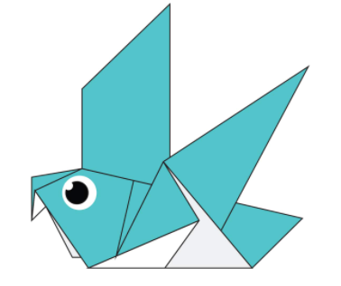

1. CAMEL:-
CAMEL
- It is called 'the ship of the desert'.
- It has a hump on its back.
- The bactrian camel has two humps.
2. CHAMELEON:-

CHAMELEON
- A chameleon can change its color at will.
- This helps it in camouflaging.
- It also changes color to regulate body temperature.
3. PIGEON:-

PIGEON
- A pigeon has excellent navigation ability.
- It is one of the few birds to have passed the mirror test.
- Earlier, they were used for deliverig letters.
4. TEDDY BEAR:-

TEDDY BEAR
- A stuffed toy bear is known as a teddy bear.
- It was first created in 1902.
- The largest teddy bear is over 50-feet high.
5. PANDA:-

PANDA
- There are two types of pandas-Red Panda and Giant Panda.
- Most of them are found in China.
- Pandas eat bamboo and they also like to lick metals.
6. FLYING CICADA:-

FLYING CICADA
- There are around 3000 cicada species.
- They can be black, brown or green.
- The cicadas are a superfamily, the Cicadoidea.